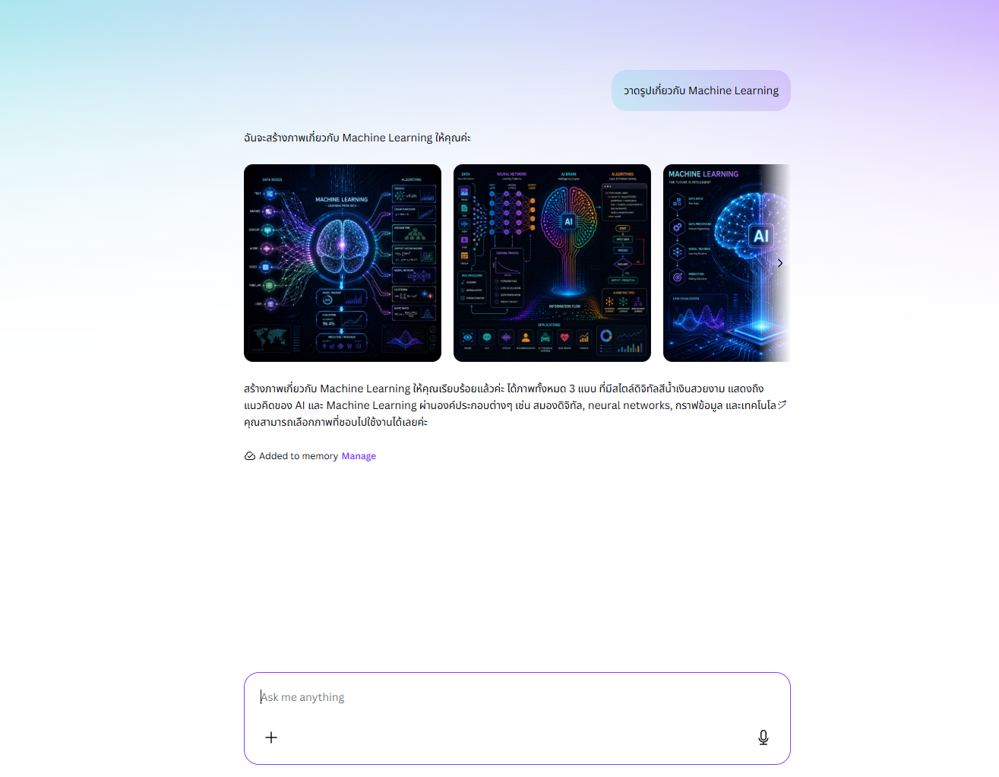
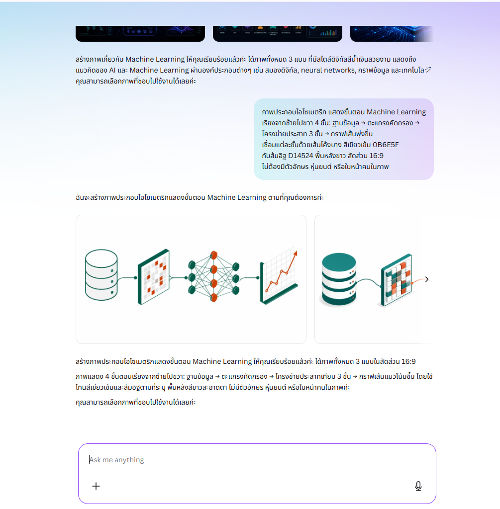
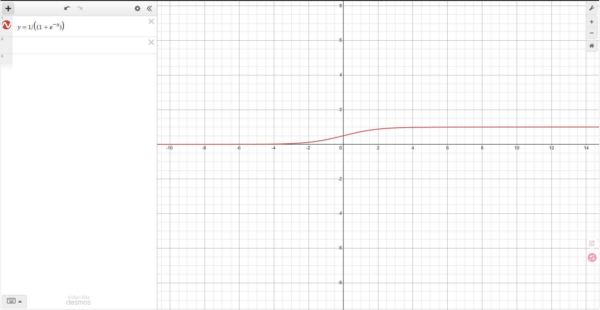
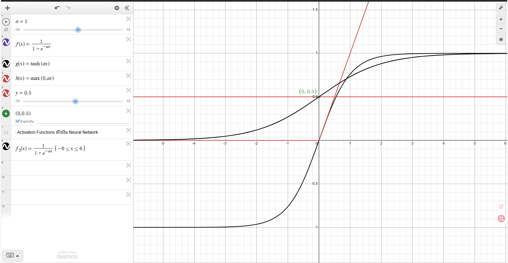
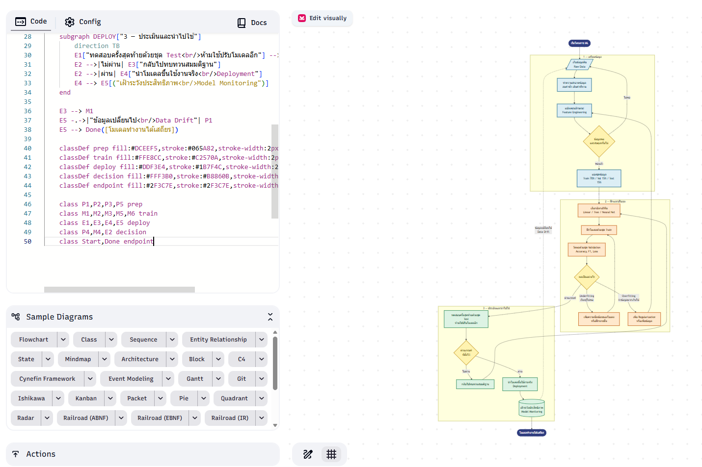
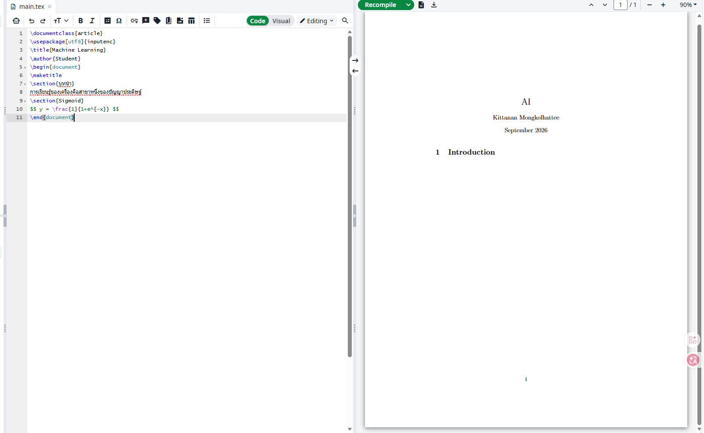
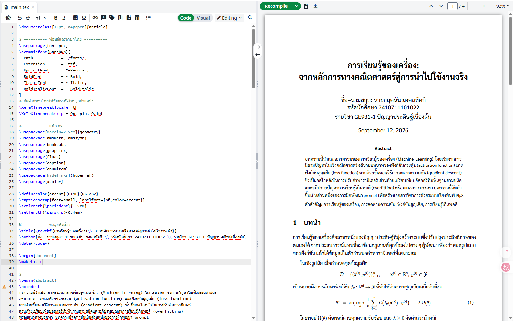
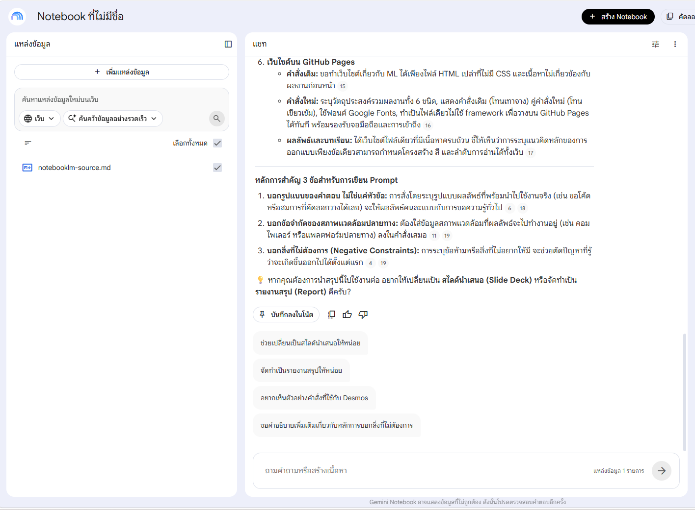
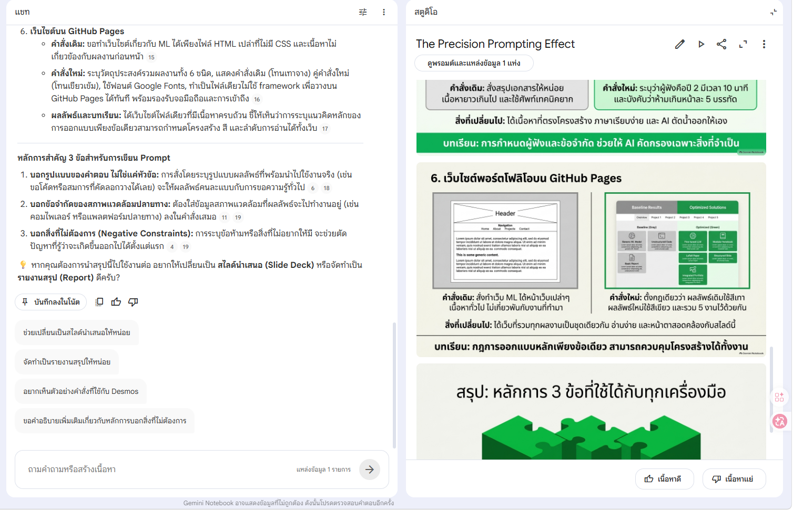
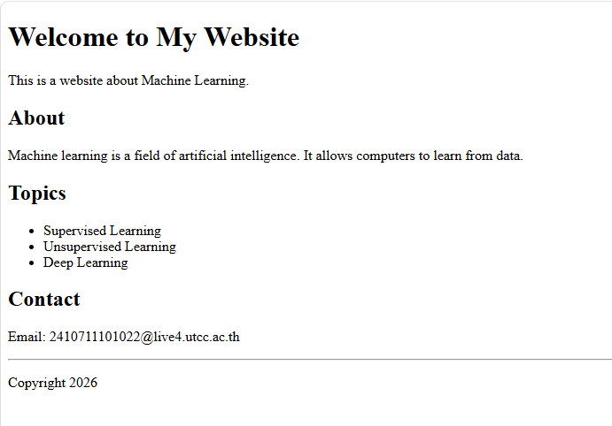

สร้างภาพด้วย AI
เครื่องมือ: Canva Magic Media
วาดรูปเกี่ยวกับ Machine Learning
ภาพประกอบไอโซเมตริก ขั้นตอนการทำงานของ Machine Learning เรียงซ้ายไปขวา 4 ขั้น: ฐานข้อมูล → ตะแกรงคัดกรอง → โครงข่ายประสาท 3 ชั้น → กราฟเส้นพุ่งขึ้น เส้นเชื่อมโยงแต่ละขั้นเป็นเส้นโค้งบาง สีเขียวเข้ม #0B6E5F กับส้มอิฐ #D14524 พื้นหลังขาว สัดส่วน 16:9 ไม่ต้องมีตัวอักษรในภาพ
ผลลัพธ์


สิ่งที่ได้เรียนรู้
คำสั่งแรกไม่ได้บอกว่าจะให้ภาพ "เล่าอะไร" ผลที่ได้จึงเป็นหุ่นยนต์กับตัวเลขลอย ๆ ที่ใช้ประกอบรายงานไม่ได้ สิ่งที่ทำให้ต่างกันคือการเปลี่ยนจากการบอกหัวข้อ มาเป็นการบอกองค์ประกอบในภาพทีละชิ้น พร้อมทิศทางการอ่าน โทนสี และข้อห้าม โดยเฉพาะ "ไม่ต้องมีตัวอักษร" ซึ่งแก้ปัญหาที่ AI มักสะกดคำผิดในภาพ
ความสัมพันธ์ทางคณิตศาสตร์
เครื่องมือ: Desmos Graphing Calculator
ช่วยสร้างกราฟใน Desmos เกี่ยวกับ Machine Learning หน่อย
สร้างชุดสมการสำหรับ Desmos เพื่อเปรียบเทียบ activation function 3 ตัวในกราฟเดียวกัน: sigmoid, tanh, ReLU ให้ทั้งสามตัวใช้ตัวแปร a ร่วมกันเป็น slider ปรับความชัน (min 0.1 max 5 step 0.1) เพิ่มเส้นประ y=0.5 เป็นเกณฑ์ตัดสิน จำกัดช่วง -6 ≤ x ≤ 6 ตอบเป็นบรรทัดที่คัดลอกวางใน Desmos ได้เลย บรรทัดละ 1 ช่อง พร้อมบอกวิธีตั้งค่า slider
ผลลัพธ์


a=1
f(x)=\frac{1}{1+e^{-ax}}
g(x)=\tanh(ax)
h(x)=\max(0,ax)
y=0.5
สิ่งที่ได้เรียนรู้
คำสั่งแรกได้คำอธิบายเป็นย่อหน้ายาวกับสมการเดียว ซึ่งเอาไปใช้ต่อไม่ได้ทันที จุดที่เปลี่ยนผลลัพธ์มากที่สุดคือการระบุ รูปแบบของคำตอบ ว่า "ตอบเป็นบรรทัดที่คัดลอกวางได้เลย บรรทัดละ 1 ช่อง" เพราะทำให้คำตอบกลายเป็นของที่ใช้งานได้ ไม่ใช่แค่ความรู้
ไดอะแกรมจากโค้ด Mermaid
เครื่องมือ: Mermaid Live Editor
เขียน mermaid diagram เกี่ยวกับ machine learning
เขียน Mermaid flowchart TD แสดงวงจรการทำโครงการ ML โดยต้องมี: - subgraph 3 กลุ่ม: เตรียมข้อมูล / ฝึกและปรับจูน / ประเมินและนำไปใช้ - decision node อย่างน้อย 3 จุด พร้อมป้ายกำกับที่เส้น - เส้นย้อนกลับเมื่อเจอ underfitting และ overfitting - เส้นประจาก monitoring กลับไปเก็บข้อมูลใหม่ (data drift) - classDef กำหนดสีแยกตามกลุ่ม ข้อความในกล่องเป็นภาษาไทย ใช้ <br/> ขึ้นบรรทัด
ผลลัพธ์
graph TD
A[Data] --> B[Model]
B --> C[Prediction]

สิ่งที่ได้เรียนรู้
คำสั่งแรกได้ไดอะแกรมเส้นตรง 3 กล่อง ซึ่งถูกต้องแต่ไม่ได้สื่ออะไรเพิ่ม เพราะ ML จริง ๆ ไม่ใช่เส้นตรงแต่เป็นวงจรที่ต้องวนกลับ การเติม "ต้องมีเส้นย้อนกลับเมื่อเจอ overfitting" เข้าไปในคำสั่ง บังคับให้โครงสร้างของไดอะแกรมสะท้อนความจริงของกระบวนการ บทเรียนคือคำสั่งที่ดีต้องบอกโครงสร้างที่ต้องการ ไม่ใช่แค่หัวข้อ
บทความวิชาการด้วย LaTeX
เครื่องมือ: Overleaf
เขียนบทความ LaTeX เรื่อง machine learning
เขียนไฟล์ .tex ฉบับสมบูรณ์ที่คอมไพล์ผ่านบน Overleaf ด้วย XeLaTeX และแสดงภาษาไทยได้ถูกต้อง ข้อกำหนด: - ใช้ fontspec โหลด Sarabun จากโฟลเดอร์ ./fonts/ - ตั้ง \XeTeXlinebreaklocale "th" เพื่อตัดคำไทย - documentclass article 12pt a4paper margin 2.5cm - ต้องมี abstract, สมการที่มีเลขกำกับและอ้างอิงด้วย \eqref - ตารางเปรียบเทียบอัลกอริทึม 3 ชนิด ใช้ booktabs - bibliography 3 รายการ เนื้อหาเป็นภาษาไทย ศัพท์เทคนิคใส่ภาษาอังกฤษวงเล็บครั้งแรก
ผลลัพธ์


สิ่งที่ได้เรียนรู้
คำสั่งแรกได้ไฟล์ที่ดูเหมือนใช้ได้ แต่คอมไพล์แล้วภาษาไทยหายทั้งหมด เพราะไม่ได้บอกว่าจะใช้ compiler ตัวไหน นี่คือกรณีที่ชัดที่สุดว่าคำสั่งต้องรวม ข้อจำกัดของสภาพแวดล้อม เข้าไปด้วย ไม่ใช่แค่บอกว่าอยากได้อะไร แต่ต้องบอกว่ามันจะต้องไปทำงานที่ไหน
สไลด์สรุปด้วย NotebookLM
เครื่องมือ: Google NotebookLM
สรุปเอกสารนี้ให้หน่อย
สร้างสไลด์สรุปสำหรับนำเสนอในชั้นเรียน 10 นาที ผู้ฟังคือนักศึกษาปี 2 ที่เพิ่งเริ่มเรียน AI โครงสร้างที่ต้องการ: 1 หน้าเปิด บอกคำถามหลักของงาน 6 หน้ากลาง หน้าละ 1 เครื่องมือ แต่ละหน้าต้องมี คำสั่งเดิม คำสั่งใหม่ และสิ่งที่เปลี่ยนไประหว่างสองอัน 1 หน้าปิด สรุปหลักการ 3 ข้อที่ใช้ได้กับทุกเครื่องมือ ใช้ภาษาไทย ประโยคสั้น หน้าละไม่เกิน 5 บรรทัด ไม่ต้องใส่ศัพท์เทคนิคที่ยังไม่ได้อธิบาย
ผลลัพธ์


สิ่งที่ได้เรียนรู้
NotebookLM ตอบจากเอกสารที่เราอัปโหลดเท่านั้น คุณภาพของผลลัพธ์ จึงขึ้นกับสองอย่างพร้อมกันคือแหล่งข้อมูลและคำสั่ง คำสั่งแรกได้สรุปที่ถูกต้องแต่กระจายไปทุกหัวข้อเท่า ๆ กัน การระบุผู้ฟัง เวลา และจำนวนบรรทัดต่อหน้า ทำให้ระบบตัดสินใจแทนเราได้ว่า อะไรควรอยู่และอะไรควรตัดทิ้ง
เว็บไซต์บน GitHub Pages
เครื่องมือ: GitHub Pages · หน้าที่คุณกำลังอ่านอยู่นี้
ทำเว็บไซต์เกี่ยวกับ machine learning ให้หน่อย
สร้างเว็บไฟล์เดียว index.html สำหรับ GitHub Pages เพื่อรวบรวมผลงาน 6 ชิ้นจากวิชา AI ข้อกำหนด: - ทุกหัวข้อแสดงคำสั่งเดิมกับคำสั่งใหม่คู่กัน เป็นลวดลายหลักของทั้งเว็บ คำสั่งเดิมใช้โทนเทาจาง คำสั่งใหม่ใช้โทนเขียวเข้ม - มีแถบสารบัญติดขอบบนที่กดแล้วเลื่อนไปแต่ละหัวข้อ - ฟอนต์ไทยจาก Google Fonts (หัวข้อ Trirong / เนื้อหา IBM Plex Sans Thai) - responsive ลงถึงจอมือถือ มี focus ring ชัดเจน และเคารพ prefers-reduced-motion - CSS ฝังในไฟล์เดียว ไม่ต้องใช้ framework
ผลลัพธ์

คือหน้าที่คุณกำลังอ่านอยู่นี้
สิ่งที่ได้เรียนรู้
คำสั่งแรกได้หน้าเว็บที่ถูกต้องตามหลักภาษา HTML แต่ไม่มีอะไรเป็นของงานนี้เลย เพราะไม่ได้บอกว่าเว็บนี้มีไว้ทำอะไรและใครจะอ่าน สิ่งที่เปลี่ยนผลลัพธ์มากที่สุดไม่ใช่รายการฟีเจอร์ แต่เป็นการบอก แนวคิดหลักของการออกแบบ ว่าให้ทุกหัวข้อแสดงคำสั่งเดิมคู่กับคำสั่งใหม่ เพราะข้อเดียวนี้กำหนดทั้งโครงหน้า สี และลำดับการอ่านของทั้งเว็บ
สามอย่างที่ใช้ได้กับทุกเครื่องมือ
1. บอกรูปแบบของคำตอบ ไม่ใช่แค่หัวข้อ
"อธิบาย sigmoid" กับ "ให้สมการ sigmoid เป็นบรรทัดที่วางใน Desmos ได้เลย" ได้ผลต่างกันสิ้นเชิง ทั้งที่ถามเรื่องเดียวกัน
2. บอกข้อจำกัดของที่ที่ผลลัพธ์จะไปอยู่
ไฟล์ LaTeX ที่ไม่รู้ว่าจะคอมไพล์ด้วย XeLaTeX ย่อมแสดงภาษาไทยไม่ได้ เครื่องมือปลายทางเป็นข้อมูลที่ต้องอยู่ในคำสั่ง
3. บอกสิ่งที่ไม่ต้องการด้วย
"ไม่ต้องมีตัวอักษรในภาพ" หรือ "ไม่ต้องใส่ศัพท์ที่ยังไม่ได้อธิบาย" ตัดปัญหาที่รู้อยู่แล้วว่าจะเกิดออกไปตั้งแต่ต้น เร็วกว่าการแก้ทีหลัง